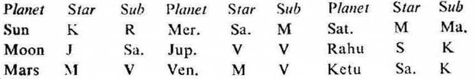

Question. Whether I shall be able to leave the job, if so when?
Number. 135 (out of 249)
Place of Judgment. 23°N 2′, 72°E 35′
Time of Judgment. 19-4-1972, Wednesday; 3-55 p.m. I.S.T.

If the sub lord of the 10th or 6th cusp be the significator of 1, 5 or 9, the querent can leave service during the joint period of the significators of 1, 5 and 9. These significators are generally connected with the houses of service 2, 6 or 10.
The querent desires to leave service because he does not keep good health. In this horary map Moon occupies the 9th and owns the 10th. It is in the star Jupiter owning 3, 6 and occupying 3. It is in the sub Saturn owning 5. So it is the significator of 3 (change), 6 (service) and connected with 5 (absence of service), 9 (absence of occupation) and 10 (occupation). Thus Moon clearly indicates that the query refers to leaving of service or occupation. Further Moon is aspected by Jupiter the owner of 6. So it indicates ill health.
10th Cusp. The sub lord of the 10th cusp is Mercury. It is direct in motion. It occupies 5. Its star lord Saturn is direct in motion, it owns 5. Its sub lord Moon occupies 9. So Mercury is the significator of 5 and connected with 5 and 9. Hence it signifies leaving of service.
6th Cusp. The sub lord of the 6th cusp is Ketu. It occupies 9. Its star lord Saturn is direct in motion, it owns 5. It is in its own sub. So Ketu is the significator of 5 and connected with 9. Hence it denotes leaving of service.
11th Cusp. The sub lord of the 11th cusp is Rahu. Its star lord Sun owns 11 and occupies 6. Its sub lord Ketu occupies 9. So Rahu is the significator of 6, 11 and connected with 9. Hence the querent’s desire to leave service on account of ill health will be fulfilled.
None of them is in the star or sub of a retrograde planet. So the ruling planets are Sun, Mercury, Jupiter and Venus.
(a) At the time of judgment (Jupiter Dasha balance 12Y 11M 1D) the querent is running the joint period of Jupiter, Saturn and Venus.
Jupiter owns 6, it is in the star and sub Venus owning 1 which is in conj. with Saturn owning 5. So it is the significator of 1, 5 and connected with 1, 5 and 6.
Saturn is in the star Moon owning 10 and occupying 9; it is in the sub Mars owning 2 in conj. with Saturn owning 5 and Venus owning 1. So it is the significator of 9, 10 and connected with 1, 2 and 5.
Venus is in the star Moon owning 10 and occupying 9; it is in its own sub Venus owning 1 in conj. with Mars owning 2 and Saturn owning 5. So it is the significator of 9, 10 and connected with 1, 2 and 5.
(b) Jupiter and Venus are among the ruling planets and Saturn being in conj. with the ruling planet (Venus) is connected with the ruling planet Venus.
(c) These joint period rulers are the significators of 1, 5 and 9. They all are connected with the houses of service and also with the ruling planets. So the querent will leave service during their joint period (5-4-1972 to 7-9-1972) before 7-9-1972.
(d) The querent is a teacher in the school. So he can leave service at the beginning of the term when the school reopens in the month of June 1972 after summer vacation,
The sookshma period of Rahu starts from 30-5-1972 and lasts upto 22-6-1972. Rahu is the cuspal sub lord of 11 and denotes the fulfilment of the querent’s desire as previously discussed. So the querent will leave service before 22-6-1972 during the joint period of Jupiter, Saturn, Venus and Rahu.
The querent left service on 15-6-1972. On that day Moon was transitting in Cancer 20° 0′ in the sub Venus (the inter period ruler); Venus in Gemini 4° 46′ in its own sub Venus; and Jupiter in Sagittarius 11° 20′ in the sub Saturn (the sub period ruler).